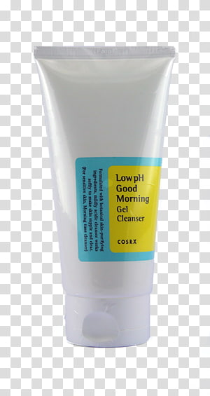
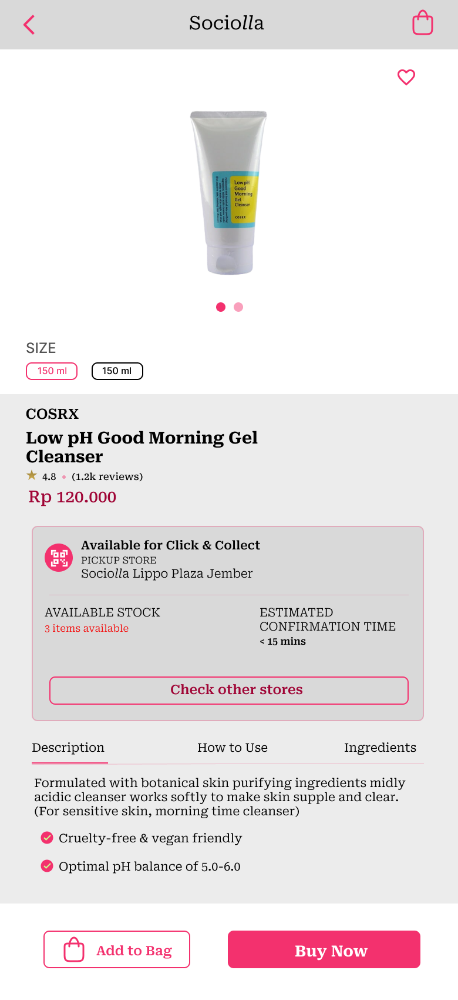
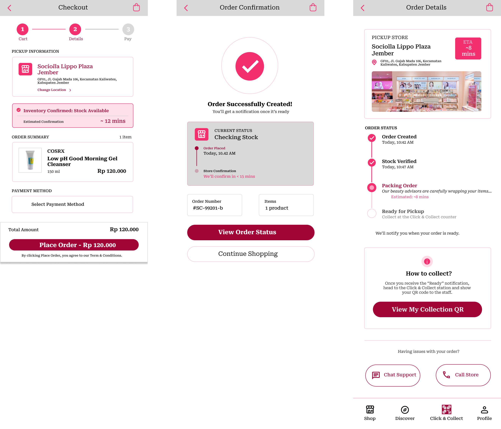
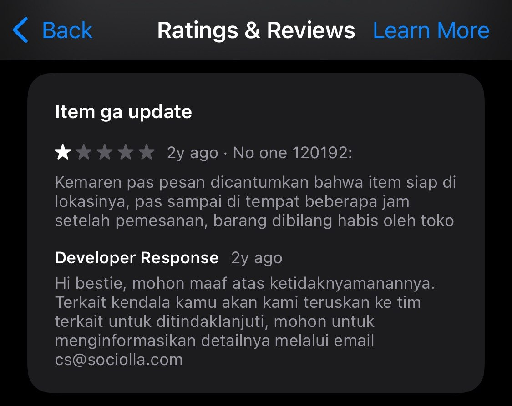
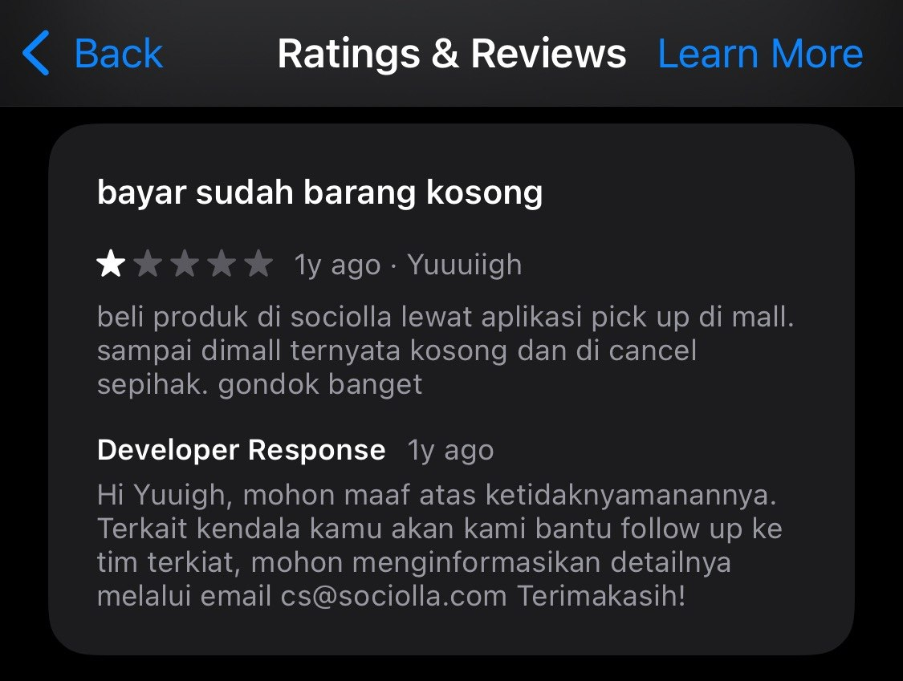
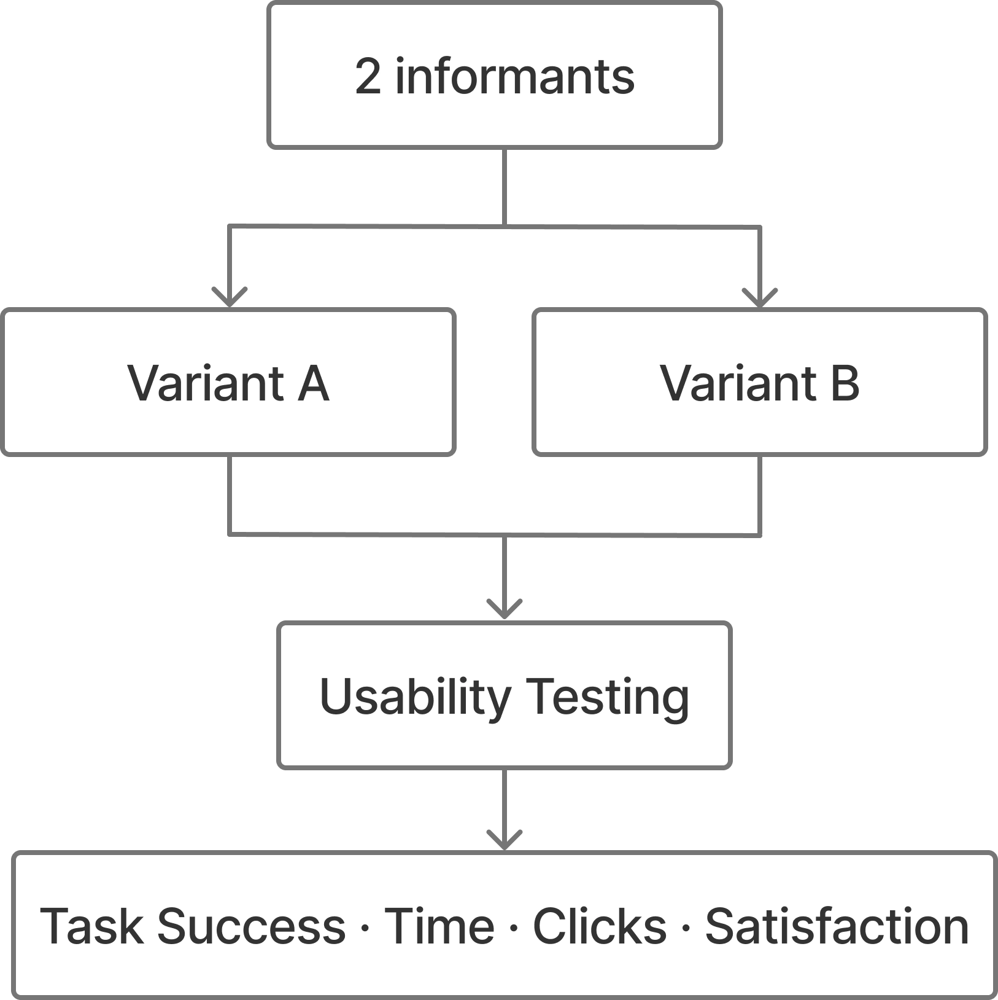

Uncertain availability
Inventory may not be confirmed until after users have committed to the pickup flow.
Independent Product Research · BeautyTech / E-commerce
Making the order confirmation experience faster and more transparent for SOCO by Sociolla users.
A Product Management case study exploring stock availability, order progress tracking, and timely updates throughout the Click & Collect journey.



01 · The friction
Users may select Click & Collect only to discover that an item is unavailable, or wait hours for manual stock confirmation. The gap between expectations and store fulfillment creates uncertainty.
Inventory may not be confirmed until after users have committed to the pickup flow.
WhatsApp-based confirmation can introduce a 2–4 hour wait before users know their order status.
Users have little visibility into what happens while the order is being verified and prepared.
02 · Listen to users
App Store reviews were used as supporting evidence to understand stock availability and cancelled or unsuccessful pickup orders.
“Item ga update.”
“Bayar sudah barang kosong.”


Real user reviews from the Sociolla app listing, used as supporting evidence for this independent case study. User information is not reproduced here.
03 · The evidence
Simulation metrics helped frame the problem and define the direction for the proposed improvements. They are not official Sociolla performance data.
Disclaimer: This Product Management simulation was created for educational purposes. Data and performance figures are simulated and do not represent an official Sociolla project or actual business performance.
04 · Discovery & experimentation
The experiment focused on whether users could complete pickup-related tasks, understand the progress tracker, and feel confident about the order flow.
Experiment design
Period: 8–19 June 2026
Segment: Women aged 18–25 who actively use Sociolla Click & Collect.
Two variants were explored through usability testing. Task success, time, clicks, and satisfaction were considered to evaluate the experience.

05 · Product decision
The proposed direction is to continue toward a limited pilot, prioritizing visibility and reliable stock confirmation while keeping secondary enhancements out of the initial scope.
Usability findings indicated the proposed flow could be understood and completed, supporting further validation before broader rollout.
Variant B took more time and one additional click, without reducing task success or satisfaction. One detail was adjusted to clarify that the payment method remains unchanged.
Help users confirm availability before committing to pickup.
Make status understandable without contacting the store.
Additional filtering, sorting, and pickup scheduling were deferred.
06 · Proposed solution
Use the tabs or navigation buttons to explore three moments of the Click & Collect experience.
Step 01 · Before checkout
Users can verify real-time inventory availability before choosing Click & Collect.
Purpose
Reduce uncertainty before committing to an order.
07 · Requirements & impact
Requirements connect user needs to product behaviors. Success metrics are proposed targets to measure after launch, not observed results.
As a user, I want to know store stock availability before placing an order so I can choose pickup confidently.
As a user, I want to see my order progress so I don't need to contact the store for updates.
As a user, I want notifications when order status changes and a link to the order details.
| Metric | Baseline | Target |
|---|---|---|
| Confirmation time | 2–4 hours | ≤ 15 minutes |
| Drop-off | 65% | ↓ 5% |
| User satisfaction | Not established | ↑ 5% |
Measurement window: 3 months after feature launch. Targets are proposed and require validation through product analytics.
Expected impact
08 · Project timeline
Explore the project schedule in the original Gantt Chart workbook.
09 · Key learnings
Product decisions should be shaped by user needs, business priorities, and structured problem-solving, not by ideas alone.
Research and evidence help identify which problems matter before proposing features.
Transparency and timely updates can improve experience without redesigning the entire system.
RICE helped compare concepts and focus on initiatives with stronger potential value.
10 · Project materials
Selected deliverables from the original bootcamp project. Supporting documents are in Bahasa Indonesia.
Case completed · Learning continues
This case reinforced how thoughtful product decisions can turn a frustrating gap in the journey into a clearer, more confident user experience.